Stabat Mater
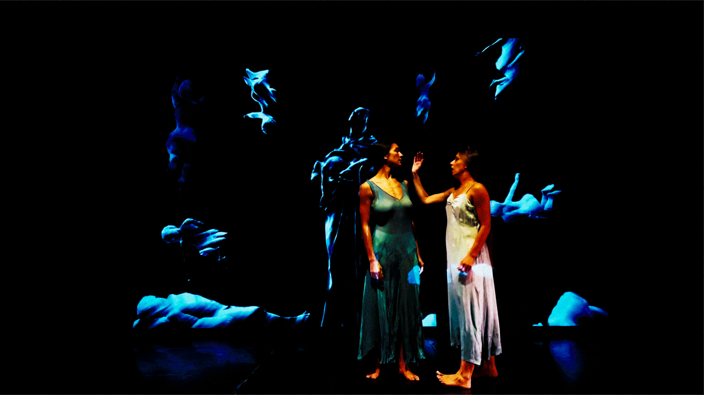
Nello Stabat Mater di Giovan Battista Pergolesi la musica sacra incontra la danza contemporanea. La partitura, intrisa di dolore e bellezza, diventa terreno per una rilettura scenica in cui il corpo dà forma alle emozioni delle due Marie, la Madre di Cristo e la Maddalena, in assonanza con le tante madri che oggi piangono i loro figli nelle guerre.
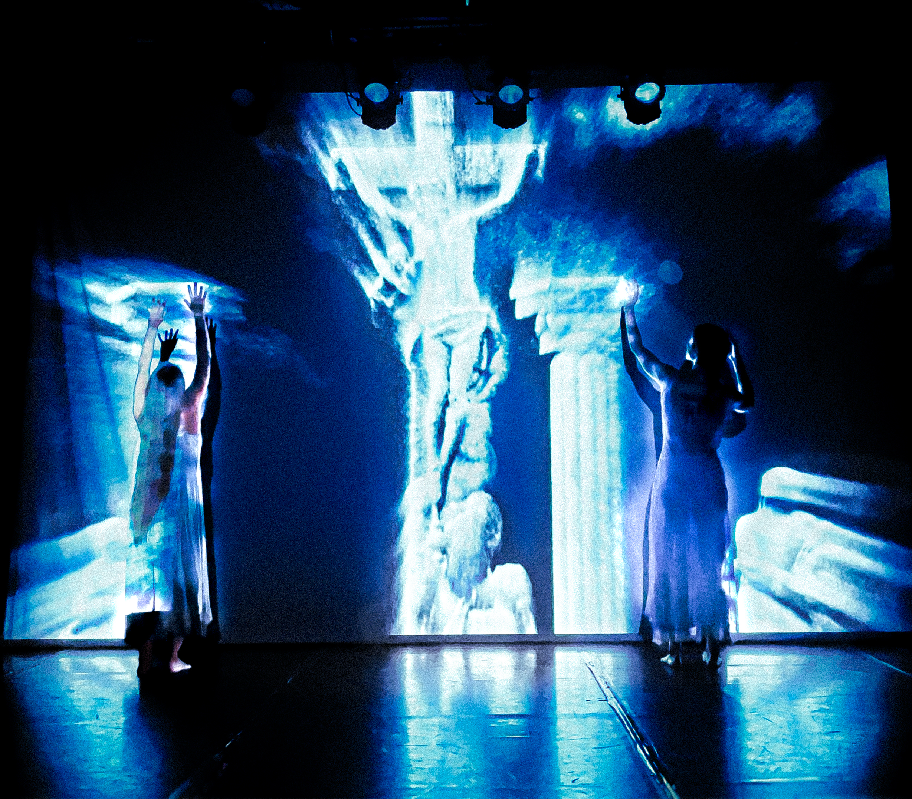
Questo progetto nasce in seguito alla conoscenza che ho avuto con la compagnia Con.Cor.D.A / Movimentoinactor, la quale, dopo la residenza LIMEN avvenuta nei loro spazi, mi ha commissionato la scenografia digitale per lo spettacolo.
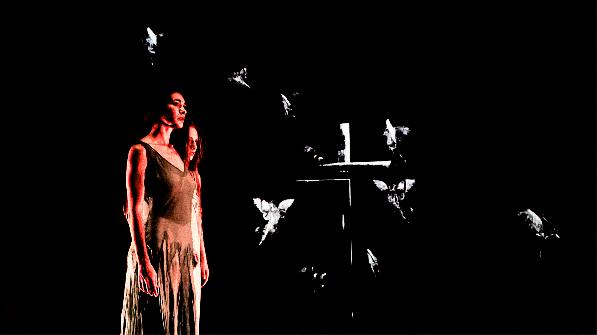
Coreografia e regia: Flavia Bucciero
Danzatrici: Grazia Montelione e Iolanda Del Vecchio
Video-art: Boris Pimenov
Produzione: Movimentoinactor Teatrodanza
Presentato al Teatro 99 Posti di Mercogliano nell’ambito di RAID Festivals.
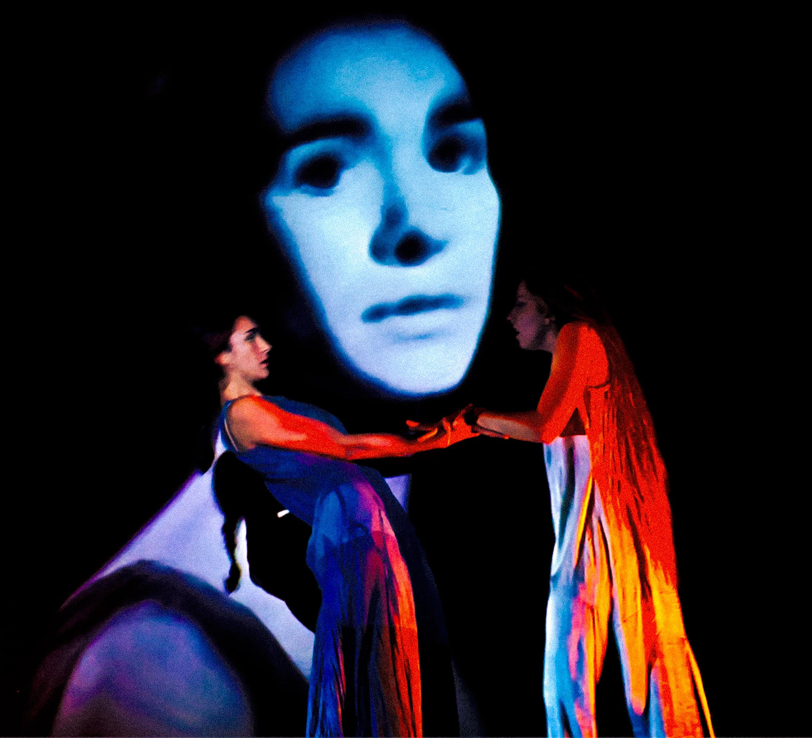
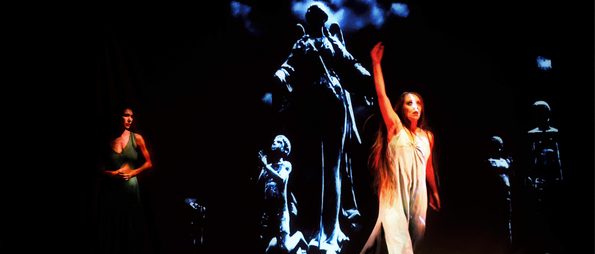
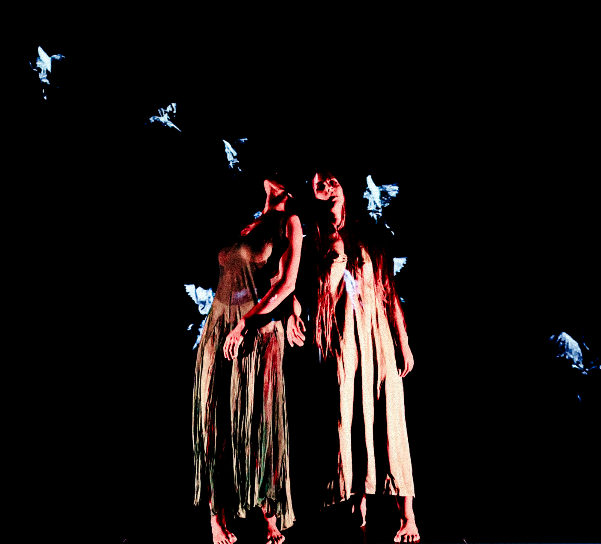
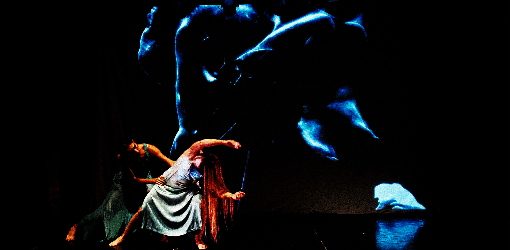
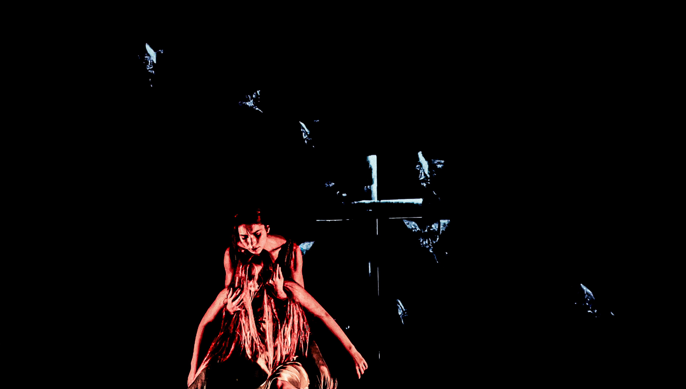
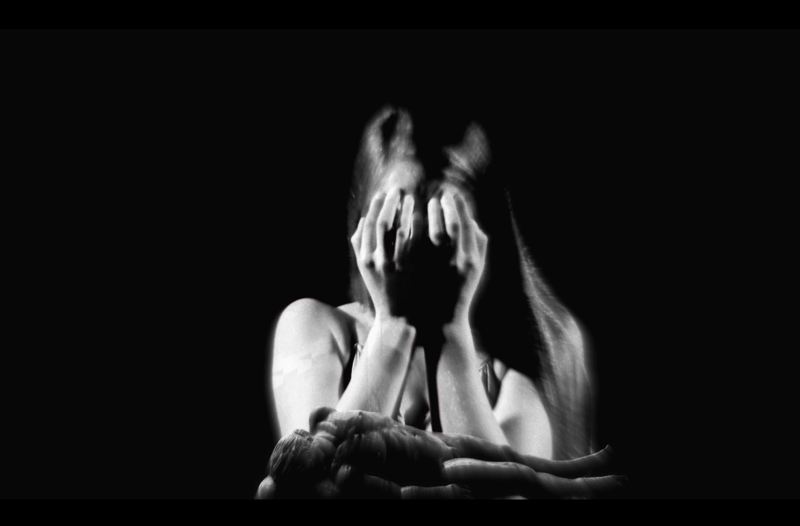
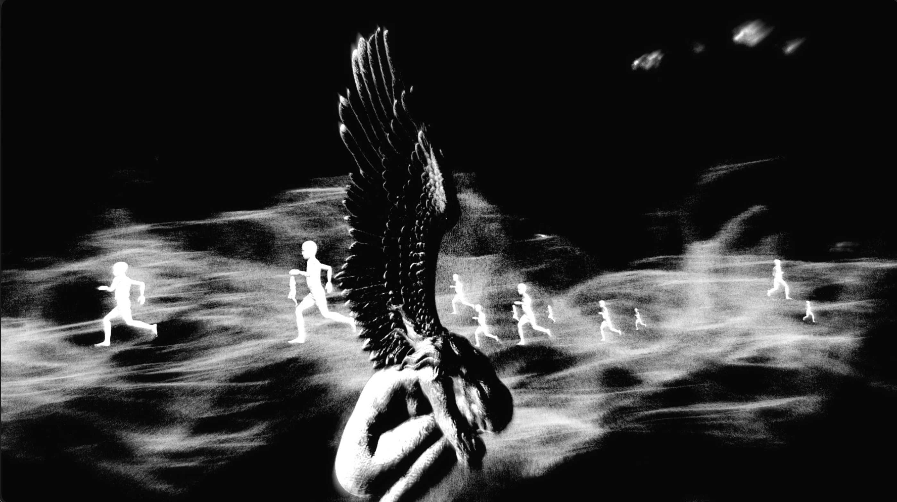
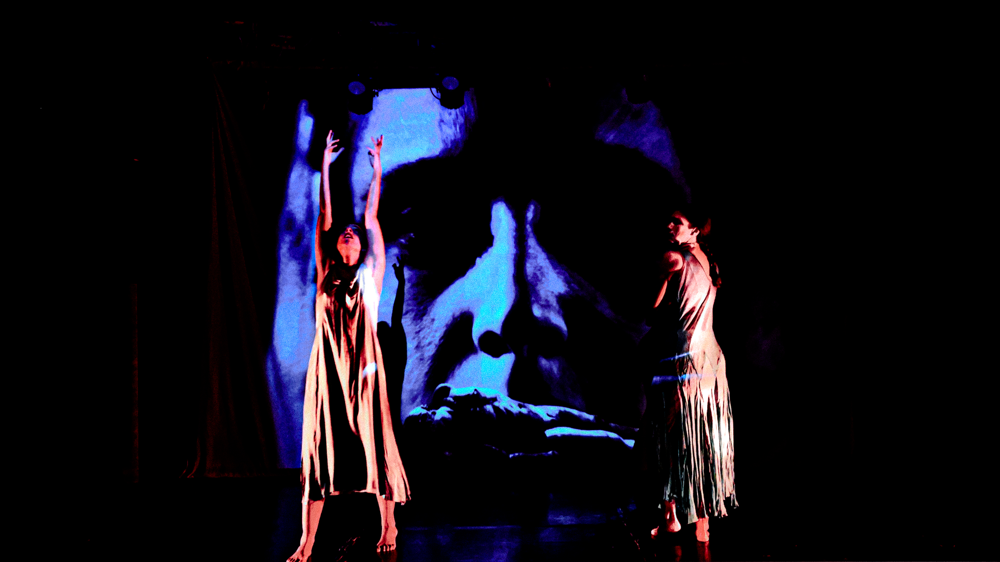